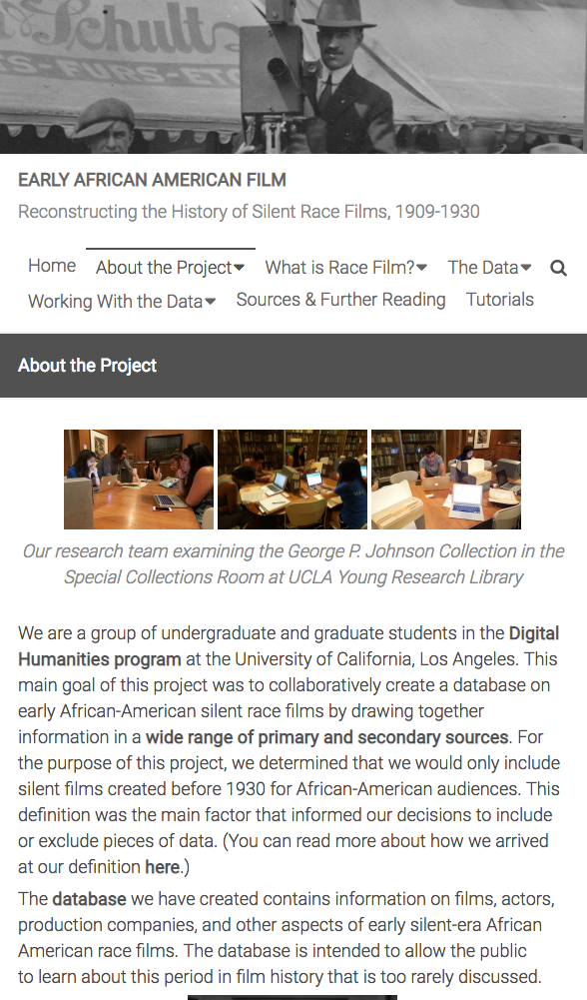
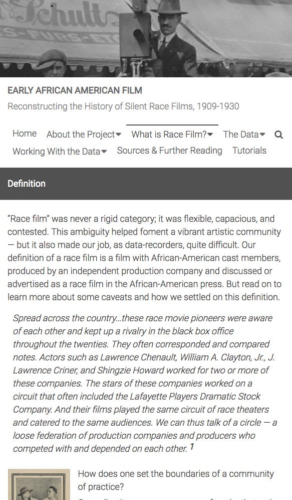
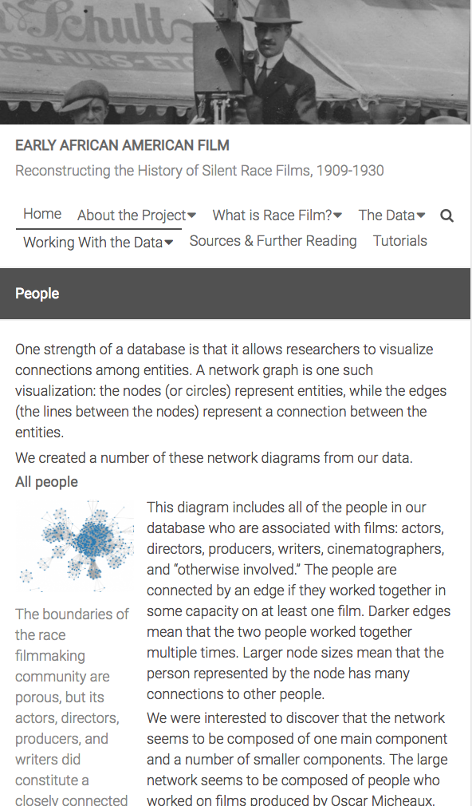
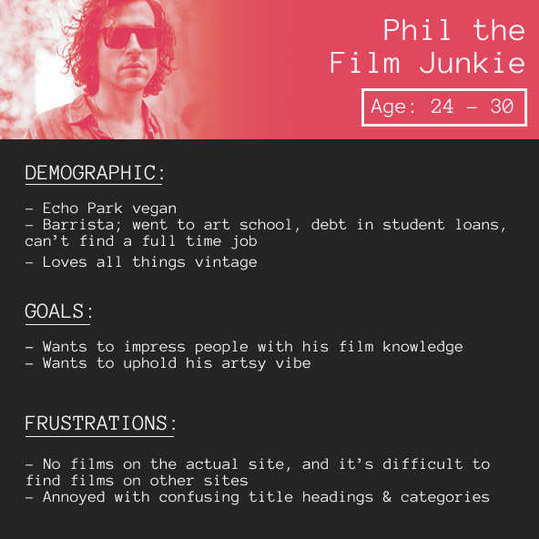
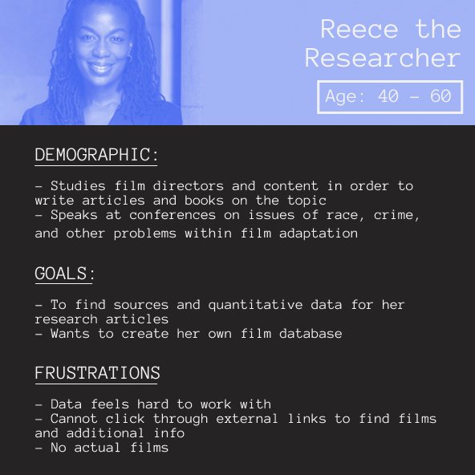
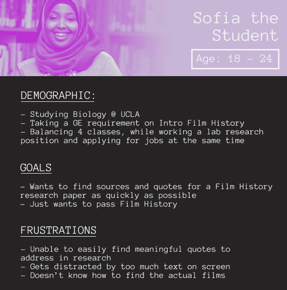

I completed this project in DH199, the capstone research class for students in the digital humanities program. I worked alongside eight other undergraduate students to research and redesign the user experience of a website created by a previous capstone research class to better showcase its uses and achievements. The original site received a significant amount of press and traffic, and we believed revamping the site would help boost this topic to a greater extent. We completed the project over the course of 10 weeks and presented our project to the program directors at the end of the spring quarter.
The Early African American Film website provides a platform for the purpose of raising awareness, promoting research, and highlighting the significance of early race film during the silent era. My team was tasked with reorganizing the site’s content to highlight and feature a more “digital humanities” approach - with a focus on data visualizations and how to work with the data. In order to do so, we conducted stakeholder interviews, user interviews, and google surveys to gather the sufficient research needed to suggest site improvements. I assisted the research process and lead the site development.
| Role: | Web Designer |
| Tools: | Github, Mobirise, Photoshop |
| Completed: | June 2018 |
| Client: | UCLA Digital Humanities Program |
| Category: | UX Design |
We inherited a comprehensive, searchable database but a website that was not user friendly. The orignal site was difficult to navigate, disorganized, and text heavy.



We applied a series of user experience research techniques to help us identify painpoints and areas of improvement for the website. Below are some key findings:
Stakeholders - Professors, Project Creators, Research Professionals
• Emphasized highlighting the dataset
• Rework the tabs, offer multiple ways of navigating
General Users - Students, Film Lovers
• Did not understand the purpose of the site
We organized the feedback we received into three categories: information architecture, design, and content. After analyzing various pain points from different people we narrowed down the website to 3 main personas: Phil the Film Junkie, Reece the Researcher, and Sofia the Student.
To better gauge the most intuitive information architecture for the site, we ran 3 rounds of card sorting with the existing site information. We began with our own internal card sorting, having our own team rearrange information in a way that made the most sense to us. We then ran the activity with users who had never used the site before. From there, we summarized results from both external users and internal users, and averaged feedback from all parties into the new information architecture below. The new information architecture reallocated content to more appropriate locations to make the information more cohesive for the users.
Once the new information architecture was established, my fellow team members put together the wireframes and wrote additional copy to clarify the mission and purpose of the site. As part of the Web Development subcommittee, I collaborated with two of my teammates to begin the website prototyping process. The orignal site was hosted on WordPress. We hosted ours on GitHub to allow more creative freedom. Coming from non-technical backgrounds, the three of us decided to create the website using Mobirise, a freeware web design application that allows users to create and publish bootstrap websites, without coding. This allowed us to focus on the content and design of the project within the limited time frame available. Using the wireframes as our guide, we each worked on different pages.
I focused on the Home, Films Database, Meet the Team, History, and Definition page. The design process involved using the drag and drop website creator to drag blocks in the appropriate places. I also utilized Photoshop to adapt images from the original site and redisplayed them in a way that made them pop off the page. When the pages were complete, we used the GitHub Pages publishing option within Mobirise to publish our website. There were technical issues where certain blocks weren't displaying the correct color. These issues were fixed by manually changing the code once they were uploaded to GitHub. The final product was a site that came to life with more color, motion, and improved nagivation.